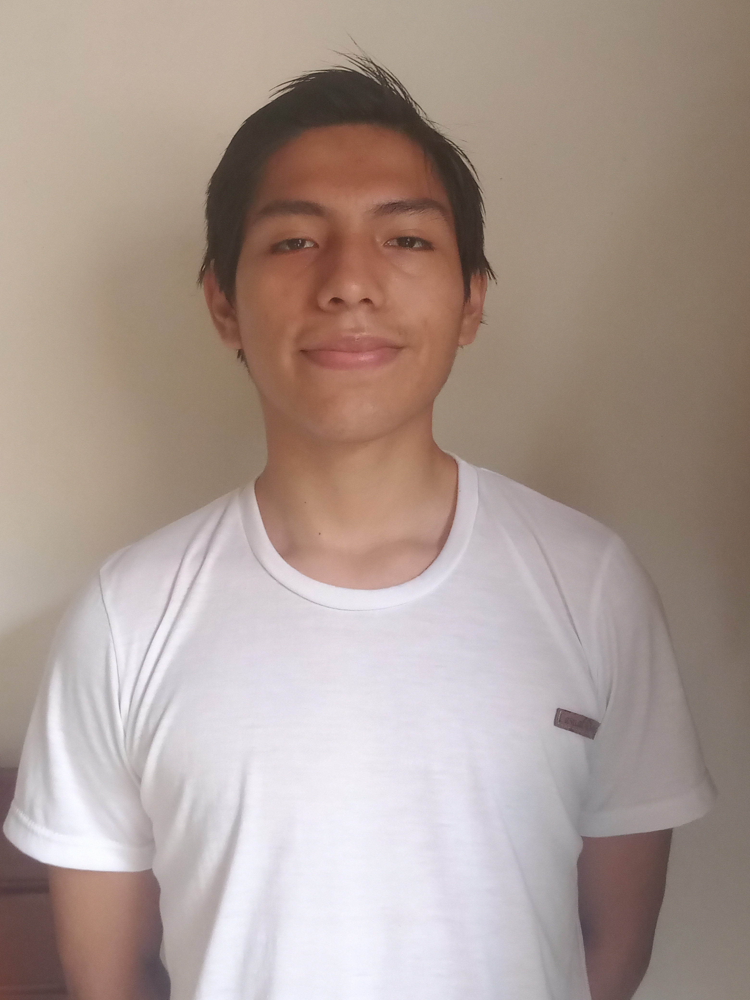

Curriculum Vitae
Datos personales

Luis Manuel Meza Cajo
Dirección: AA.HH San Antonio de Padua Mz O Lte 9A
Distrito: San Juan de Miraflores
Telefono: 912204927
E-mail: luisito_9_manuel@hotmail.com
Formacion Academica
Educacion Secundaria
2014 - 2015: Colegio Particular: "Prolog"
2016 - 2018: Colegio Particular: "San Marcos"
2019 - 2020: I.E: "San Juan"
Educacion Tecnica
2021 - 2024: Instituto Certus
Idiomas
Ingles: Nivel básico escrito y hablado
Perfil
Estudiante de Administracion de Sistemas para la Transformacion Digital
que se encuentra cursando el primer ciclo de carrera, con una solida formacion en valores, aptitud proactiva,
compromiso, mucha creatividad y empatía con la capacidad de completar la actividad que se me designe.